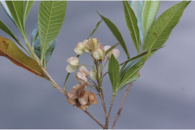
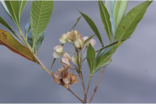

Large shrubs or small trees up to 5 m tall.
ದೊಡ್ಡ ಗಾತ್ರದ ಪೊದೆಗಳು ಅಥವಾ 5 ಮೀ ಎತ್ತರದವರೆಗಿನ ಸಣ್ಣ ಗಾತ್ರದ ಮರಗಳು.
Large shrubs or small trees up to 5 m tall.
பெரிய குத்துச்செடி அல்லது சிறிய மரம், 5 மீ. உயரம் வரை வளரக்கூடியது.
Bark greyish brown, fissured.
ತೊಗಟೆ ಕಂದು ಮಿಶ್ರಿತ ಬೂದು ಸೀಳಿಕಾ ಮಾದರಿಯಲ್ಲಿರುತ್ತದೆ.
Bark greyish brown, fissured.
மரத்தின் பட்டை சாம்பல்-ப்ரவுன் நிறமானது , வலைப்பின்னல் பிளவுகளுடையது.
Young branchlets angular to subterete, scurfy puberulous.
ಎಳೆಯ ಕಿರುಕೊಂಬೆಗಳು ಕೋನಯುಕ್ತದಿಂದ ಉಪ-ದುಂಡಾದವರೆಗಿನ ಆಕಾರ ಹೊಂದಿದ್ದು ಸೂಕ್ಷ್ಮ ಹಗರು ಮೃದುತುಪ್ಪಳವನ್ನು ಹೊಂದಿರುತ್ತವೆ.
Young branchlets angular to subterete, scurfy puberulous.
சிறிய நுனிக்கிளைகள் குறுக்குவெட்டுத் தோற்றத்தில் கோணங்களுடையது முதல் குறுக்குவெட்டுத் தோற்றத்தில் கிட்டதட்ட வளையமானது, உரோமங்களுடையது.
ಎಲೆಗಳು ಸರಳವಾಗಿದ್ದು ಪರ್ಯಾಯ ಮತ್ತು ಸುತ್ತು ಜೋಡನಾ ವ್ಯವಸ್ಥೆಯಲ್ಲಿರುತ್ತವೆ ಮತ್ತು ಕುಡಿಕೊಂಬೆಗಳ ತುದಿಯಲ್ಲಿ ಗುಂಪಾಗಿರುತ್ತವೆ;ತೊಟ್ಟುಗಳು ಅಂದಾಜು 0.2 ಸೆಂ.ಮೀ. ಉದ್ದವಿದ್ದು ದೃಢವಾಗಿದ್ದು ಉಬ್ಬಿದ ತಳಬಾಗದ ಸಮೇತವಿರುತ್ತವೆ,ಅಡ್ಡ ಸೀಳಿದಾಗ ಸಪಾಟ ಪೀನ ಮಧ್ಯದ ಆಕಾರ ಹೊಂದಿರುತ್ತವೆ;ಪತ್ರಗಳು 2.5 – 6.5 X 0.5-1.2 ಸೆಂ.ಮೀ. ಗಾತ್ರ, ಸಂಕುಚಿತ ಅಂಡವೃತ್ತದಿಂದ ಭರ್ಜಿ-ಬುಗುರಿವರೆಗಿನ ಮಾದರಿಯ ಆಕಾರ,ಕ್ರಮೇಣ ಚೂಪಾಗುವುದರಿಂದ ಅಗ್ರದಲ್ಲಿ ಮೊನಚು ಮುಳ್ಳನ್ನೊಳಗೊಂಡು ಚೂಪಾದವರೆಗಿನ ತುದಿ,ತಳಬಾಗಕ್ಕೆ ವಿಸ್ತರಿಸಿದ ಬುಡ,ನಯವಾದ ಮತ್ತು ಹಿಂಸುರುಳಿ -ಗೊಂಡ ಅಂಚು, ಹೊಳಪುಳ್ಳ ಮೇಲ್ಭಾಗ ಹೊಂದಿದ್ದು ರೋಮರಹಿತವಾಗಿರುತ್ತದೆ ಮತ್ತು ಅಂಟು ರಸಗ್ರಂಥಿಗಳ ಸಮೇತವಿರುತ್ತವೆ; ಮಧ್ಯನಾಳ ಮೇಲ್ಭಾಗದಲ್ಲಿ ಉಬ್ಬಿರುತ್ತದೆ; ಎರಡನೇ ದರ್ಜೆಯ ನಾಳಗಳು ಅಂದಾಜು 16 ಜೋಡಿಗಳಿರುತ್ತವೆ ಮತ್ತು ಬಹುಮಟ್ಟಿಗೆ ಸಮಾಂತರದಲ್ಲಿರುತ್ತವೆ;ಮೂರನೇ ದರ್ಜೆಯ ನಾಳಗಳು ಕಡಿಮೆ ಅಂತರ ಹೊಂದಿದ್ದು ಜಾಲಬಂಧ ನಾಳ ವಿನ್ಯಾಸದಲ್ಲಿರುತ್ತವೆ.
Leaves simple, alternate, spiral, clustered at twig ends; petiole ca. 0.2 cm long, stout, swollen at base, planoconvex in cross section; lamina 2.5-6.5 x 0.5-1.2 cm, narrow elliptic to oblanceolate, apex acuminate to acute with apiculate tip, base decurrent, margin entire and revolute, shining above, glabrous, viscid; midrib raised above; secondary nerves ca. 16 pairs, nearly parallel; tertiary nerves closely reticulate.
ಪುಷ್ಪಮಂಜರಿಗಳು ಪುನರಾವೃತ್ತಿಯಾಗಿ ಕವಲೊಡೆದ ಮಧ್ಯಾರಂಭಿ ಮಾದರಿಯಲ್ಲಿದ್ದು,7 ಸೆಂ.ಮೀ.ವರೆಗಿನ ಉದ್ದ ಹೊಂದಿರುತ್ತವೆ ಹಾಗೂ ತುದಿಯಲ್ಲಿ ಅಥವಾ ಅಕ್ಷಾಕಂಕುಳಿನ -ಲ್ಲಿರುತ್ತವೆ; ಹೂಗಳು ಸಣ್ಣ ಗಾತ್ರದಲ್ಲಿದ್ದು,ಸಂಕೀರ್ಣ ಲಿಂಗಳಾಗಿರುತ್ತವೆ;ತೊಟ್ಟುಗಳು 0.5 ಸೆಂ.ಮೀ ವರೆಗಿನ ಉದ್ದ ಹೊಂದಿರುತ್ತವೆ.
Leaves simple, alternate, spiral, clustered at twig ends; petiole ca. 0.2 cm long, stout, swollen at base, planoconvex in cross section; lamina 2.5-6.5 x 0.5-1.2 cm, narrow elliptic to oblanceolate, apex acuminate to acute with apiculate tip, base decurrent, margin entire and revolute, shining above, glabrous, viscid; midrib raised above; secondary nerves ca. 16 pairs, nearly parallel; tertiary nerves closely reticulate.
இலைகள் தனித்தவை, மாற்றுஅடுக்கமானவை, சுழல் போன்று அமைந்தவை, சிறுகிளைகளின் நுனியில் இலைகள் கூட்டமாக மற்றும் நெருக்கமாக காணப்படும்; இலைக்காம்பு 0.2 செ.மீ. நீளமானது, தடித்தவை, காம்பின் தளப்பகுதி உப்பியது, குறுக்குவெட்டுத் தோற்றத்தில் பிளேனோகான்வக்ஸ்; இலை அலகு 2.5-6.5 X 0.5-1.2 செ.மீ., குறுகிய நீள்வட்ட வடிவானது முதல் தலைகீழ் ஈட்டி வடிவானது, அலகின் நுனி அதிக்கூரியது முதல் கூரியது மற்றும் நீட்சியுடையது, அலகின் தளம் டெக்கரண்ட், அலகின் விளிம்பு முழுமையானது மற்றும் பின்புறம் வளைந்து (ரெவலுட்) காணப்படும், அலகின் மேற்பரப்பு பளபளப்பானது, உரோமங்களற்றது, ஒட்டும் தண்மையுள்ளவை; மையநரம்பு மேற்புறத்தில் அலகின் பரப்பைவிட உயர்ந்து இருக்கும்; இரண்டாம் நிலை நரம்புகள் 16 ஜோடிகள், கிட்டதட்ட இணையானவை; மூன்றாம் நிலை நரம்புகள் நெருக்கமான வலைப்பின்னல் போன்றவை.
Inflorescence panicled cymes, up to 7 cm long, terminal or axillary; flowers small, polygamous; pedicel up to 0.5 cm long.
ಸಂಪುಟ ಫಲ ತೆಳುವಾದ ಪದರದ ರೀತಿಯಲ್ಲಿದ್ದು,ಸಂಕುಚಿತವಾಗಿದ್ದು 3-ರೆಕ್ಕೆಗಳ ಸಮೇತವಿರುತ್ತವೆ;ಬೀಜಗಳ ಸಂಖ್ಯೆ 1 ರಿಂದ 2 ಇದ್ದು, ಕಪ್ಪು ಬಣ್ಣ ದಲ್ಲಿರುತ್ತವೆ.
Inflorescence panicled cymes, up to 7 cm long, terminal or axillary; flowers small, polygamous; pedicel up to 0.5 cm long.
மஞ்சரி பேனிக்கிள்டு சைம் வகை, 7 செ.மீ. நீளமானது, தண்டின் நுனியில் அல்லது இலைக்கோணங்களில் காணப்படுபவை; மலர்கள் சிறியவை, பாலிகேமஸ்; மலர்காம்பு 0.5 செ.மீ. நீளமானது.
Capsule, membranous, compressed, with 3 wings; seeds 1-2, black.
Capsule, membranous, compressed, with 3 wings; seeds 1-2, black.
வெடிகனி (கேப்சியூல்), ஜவ்வு போன்றது, தட்டையானது, 3 இறகுடையது; விதைகள் 1-2, கருப்பு நிறமானது.
 
